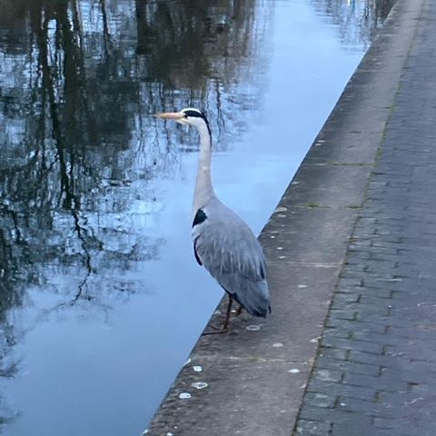

The canal is an excellent place to go running in the middle of the night. Especially if you enjoy rain and cold.
Is is far preferable to running on the canal on a Saturday afternoon, when all the worst people in London descend upon Camden.
Runner beware, it is not without its hazards, which can come in the form of:
...so be sure to sharpen your elbows
This is a typical London dogface
